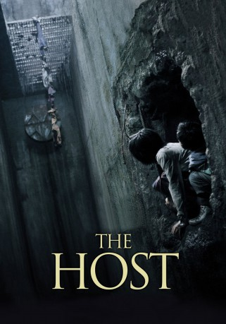
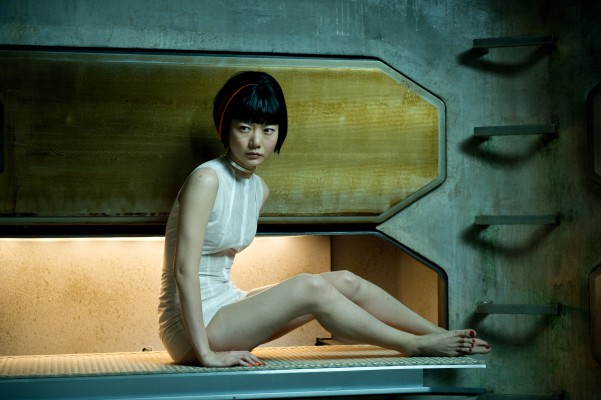

#6520 The Host
 
 IMDB-Wertung: 7.0 / 10
IMDB-Wertung: 7.0 / 10  Metascore: 0
Metascore: 0 
Nachdem Wissenschaftler in einem US-Stützpunkt in Seoul etliche abgelaufene Chemikalien in den Abfluss entleert haben, die dadurch in den Han Fluss gelangten, kam es zu einer Mutation eines riesigen amphibischem Ungeheuers. An einem sonnigen Tag, in dem Park Gang-du wieder im Kiosk seines Vaters tätig ist und auf seine Tochter Hyun-seo wartet, steigt die Bestie aus dem Fluss und verschlingt einen Passanten nach dem anderen. Gang-du flieht mit seiner Tochter, jedoch wird diese nach einer Konfrontation von der Bestie geschnappt. Alle halten sie für tot bis Gang-du nach kurzer Zeit einen Anruf von seiner Tochter erhält die in einem Kanalsystem gefangen zu sein scheint. Gang-du setzt daraufhin mit seiner Familie alles daran Hyun-seo zu retten.
Jahr: 2006
Dauer: 120 Minuten
FSK: 16
Land: Süd-Korea Studio: MFA FilmdistributionTonspuren:
Untertitel: Deutsch,
Auflösung: 1080p (1920x1040) Größe: 9297 MB
Genre: Horror, Drama, Sci-Fi, Komödie
Regisseur: Joon-ho Bong
Drehbuch: Joon-ho Bong
Soundtrack:
Darsteller:
 Kang-ho Song als Park Gang-Doo
Kang-ho Song als Park Gang-Doo- Hae-il Park als Park Nam-il
-  Doona Bae als Park Nam-Joo
- Ah-sung Ko als Park Hyun-seo
 Dal-su Oh als The Monster
Dal-su Oh als The Monster- David Anselmo als Donald
 Philip Hersh als Additional Voices
Philip Hersh als Additional Voices- No-shik Park als
 Scott Wilson als US Doctor in Morgue
Scott Wilson als US Doctor in Morgue- Hee-Bong Byun als Park Hie-bong
- Jae-eung Lee als Se-jin
- Dong-ho Lee als Se-joo
- Je-mun Yun als Homeless Man
- Martin Lord Cayce als U.S. Senator
- Cristen Cho als
 Paul Lazar als US Doctor trying to operate Gang-Du
Paul Lazar als US Doctor trying to operate Gang-Du- Brian Lee als
- Clinton Morgan als Agent Yellow
- Brian Rhee als Young Korean Doctor
Datei: X:\HD-Eastern-Modern(A-M)\Host, The (2006, FSK16, 1920x1040).mkv seit 05.07.2017
Festplatte: HD Eastern+Western
 Es gibt insgesamt 104 Filme in der Gruppe 'HD-Eastern-Modern(A-M)'
Es gibt insgesamt 104 Filme in der Gruppe 'HD-Eastern-Modern(A-M)'